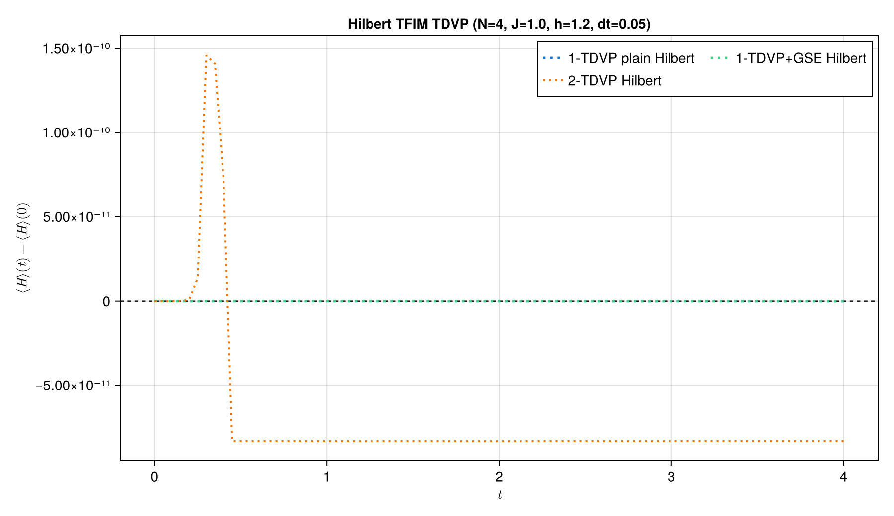
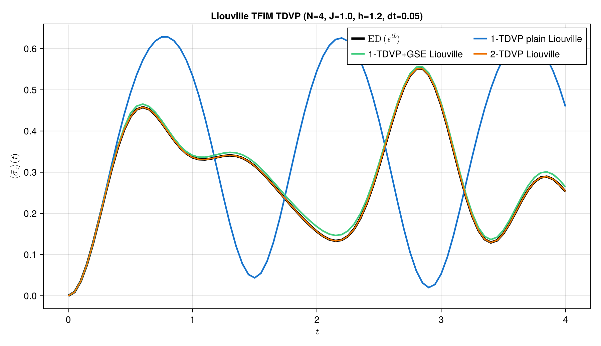
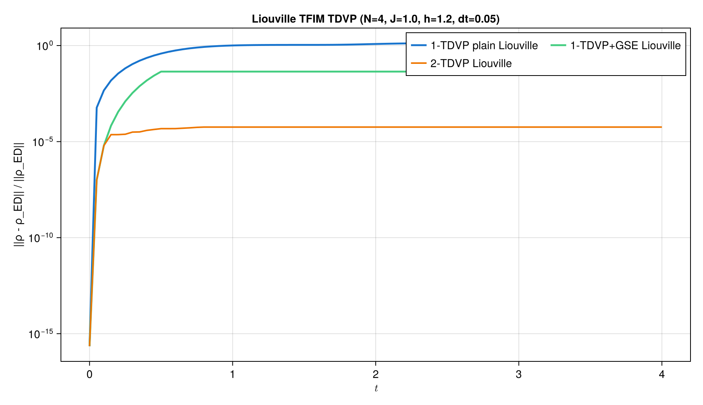
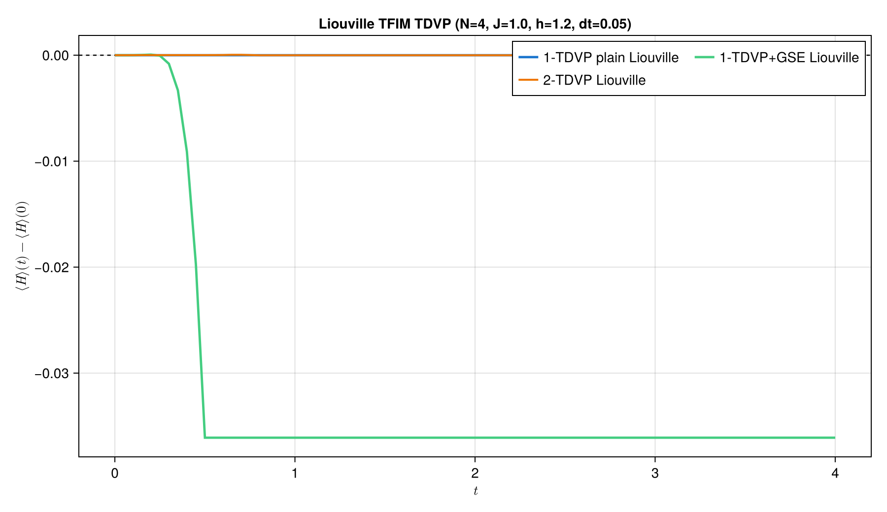

TDVP time evolution
The time-dependent variational principle (TDVP) projects an evolution equation onto the manifold of matrix-product states. This example keeps its central distinction explicit:
- Hilbert space evolves $|\psi\rangle$ with $-iH$.
- Liouville space evolves $|\rho\rangle\rangle$ with the Liouvillian $\mathcal L$.
We use two-site TDVP in both cases so the bond dimension can grow, and briefly show how global subspace expansion (GSE) supplies that missing growth to one-site TDVP.
Advanced figures for the complete 1TDVP, 1TDVP+GSE, and 2TDVP benchmark are generated by scripts/tdvp_tfim_unitary.jl.
Transverse-field Ising model
The Hamiltonian and initial state are
\[H=-J\sum_{j=1}^{N-1}Z_jZ_{j+1}-h\sum_{j=1}^{N}X_j, \qquad |\psi(0)\rangle=|\mathrm{Up}\cdots\mathrm{Up}\rangle .\]
using ITensors
using LinearAlgebra
using ProcessTensors
import ITensorMPS
const N = 4
const J = 1.0
const h = 1.2
const dt = 0.1
const final_time = 2.0
const nsteps = round(Int, final_time / dt)
const maxdim = 64
const cutoff = 1e-10
sites = siteinds("S=1/2", N)
liouville_sites = liouv_sites(sites)
H = let H_local = OpSum()
for j in 1:(N - 1)
H_local += -J, "Z", j, "Z", j + 1
end
for j in 1:N
H_local += -h, "X", j
end
H_local
end
H_mpo = MPO(H, sites)
L_mpo = liouvillian_mpo(
H,
liouville_sites;
jump_ops=Tuple{Number,String,Int}[],
)
initial_state = MPS(sites, fill("Up", N))
initial_density = to_dm(initial_state)
initial_density_liouville =
to_liouville(initial_density; sites=liouville_sites)
mean_x = let observable = OpSum()
for j in 1:N
observable += 1 / N, "X", j
end
observable
end
mean_x_mpo = MPO(mean_x, sites)
mean_x_liouville = to_liouville(mean_x_mpo; sites=liouville_sites)
@assert isapprox(real(inner(initial_state, initial_state)), 1; atol=1e-12)Exact small-system reference
Exact diagonalization (ED) is practical here only because $N=4$. It gives the untruncated evolution against which we measure the TDVP density-matrix error and observable error. Agreement with ED on this small system checks the timestep convention, the Hilbert/Liouville mapping, and the projected tensor- network evolution before TDVP is used on systems too large for dense methods.
dimension = prod(dim.(sites))
H_tensor = foldl(*, H_mpo)
H_dense = reshape(
ComplexF64.(Array(H_tensor, prime.(sites)..., sites...)),
dimension,
dimension,
)
state_tensor = foldl(*, initial_state)
state_dense = vec(ComplexF64.(Array(state_tensor, sites...)))
density_dense = state_dense * state_dense'
mean_x_tensor = foldl(*, mean_x_mpo)
mean_x_dense = reshape(
ComplexF64.(Array(mean_x_tensor, prime.(sites)..., sites...)),
dimension,
dimension,
)
function exact_density_at(
time::Real,
H_dense::AbstractMatrix,
density0::AbstractMatrix,
)
propagator = exp(-1im * time * H_dense)
return propagator * density0 * propagator'
end
function exact_sx_trajectory(
H_dense::AbstractMatrix,
density0::AbstractMatrix,
mean_x_dense::AbstractMatrix,
times::AbstractVector,
)
return [
real(tr(exact_density_at(time, H_dense, density0) * mean_x_dense))
for time in times
]
end
times = collect(range(0.0; step=dt, length=nsteps + 1))
exact_final_density =
exact_density_at(final_time, H_dense, density_dense)
sx_exact =
exact_sx_trajectory(H_dense, density_dense, mean_x_dense, times)21-element Vector{Float64}:
0.0
0.034963727283138055
0.12811205978038068
0.24902343563310836
0.3608257508147048
0.4343349976997018
0.4579367695107651
0.4392972906550874
0.3989591435399823
0.35955603186076457
0.33600030289414273
0.3309091981298635
0.3364959718352232
0.34085721486801923
0.33474270215019547
0.3153140117720468
0.28562652021401375
0.2511992141585859
0.21653764043956134
0.1840570328443326
0.15588643443832445Hilbert-space Two-siteTDVP
Schrödinger evolution obeys
\[\frac{d}{dt}|\psi(t)\rangle=-iH|\psi(t)\rangle .\]
Therefore the two-site TDVP (2TDVP) timestep is complex, -1im * dt, and the operator is the Hamiltonian MPO. We implement the 2TDVP variant with nsite=2 to allow for entanglement and operator-space bonds to grow.
hilbert_trajectory = let
state = copy(initial_state)
sx = Float64[real(inner(state', mean_x_mpo, state))]
energies = Float64[real(inner(state', H_mpo, state))]
elapsed = 0.0
for _ in 1:nsteps
elapsed += @elapsed state = tdvp(
H_mpo,
-1im * dt,
state;
time_step=-1im * dt,
nsite=2,
maxdim=maxdim,
cutoff=cutoff,
outputlevel=0,
)
push!(sx, real(inner(state', mean_x_mpo, state)))
push!(energies, real(inner(state', H_mpo, state)))
end
(; state, sx, energies, elapsed)
end
hilbert_density = to_dm(hilbert_trajectory.state)
hilbert_density_tensor = foldl(*, hilbert_density)
hilbert_density_dense = reshape(
ComplexF64.(
Array(hilbert_density_tensor, prime.(sites)..., sites...)
),
dimension,
dimension,
)
hilbert_error =
norm(hilbert_density_dense - exact_final_density) /
norm(exact_final_density)
hilbert_energy_drift =
maximum(abs.(hilbert_trajectory.energies .- first(hilbert_trajectory.energies)))
println("2TDVP on Hilbert space with dt=$(dt)")
println(" Wall time to final state: $(round(hilbert_trajectory.elapsed, digits=4)) s")
println(" Relative error of the final density matrix: $(round(hilbert_error, digits=6))")
println(" Maximum energy drift: $(round(hilbert_energy_drift, sigdigits=4))")
println(" Max bond dim of final state: $(maxlinkdim(hilbert_trajectory.state))")
@assert maximum(abs.(hilbert_trajectory.sx - sx_exact)) < 0.05
@assert hilbert_error < 0.05
@assert hilbert_energy_drift < 1e-62TDVP on Hilbert space with dt=0.1
Wall time to final state: 0.3683 s
Relative error of the final density matrix: 1.9e-5
Maximum energy drift: 1.389e-10
Max bond dim of final state: 4
1TDVP with global subspace expansion
One-site TDVP (1TDVP) projects the evolution onto an MPS manifold with fixed bond dimensions. This allows the algorithm to conserve quantities such as the system's total energy in a closed system evolution. But one main drawback of this technique, compared to the 2TDVP variant, is that the bond dimension stays fixed throughout the evolution. If we start with a product state with bond dimension one, 1TDVP cannot introduce the new Schmidt directions generated by the interacting Hamiltonian. Its projected update can therefore become trapped in an undersized variational manifold—the “1TDVP getting stuck” behavior visible in the error plots below.
Global subspace expansion enriches the MPS bonds before a one-site sweep. The global_krylov algorithm adds directions approximating $H|\psi\rangle,H^2|\psi\rangle,\ldots$ and truncates the enlarged basis. Importantly, GSE does not change the physical wavefunction. It only rewrites the same state in a larger bond-dimension representation, so later 1TDVP sweeps have room to leave the original product-state manifold.
println("Initial state bond dimensions: ", linkdims(initial_state))
expanded_core = ITensorMPS.expand(
initial_state.core,
H_mpo.core;
alg="global_krylov",
krylovdim=2,
cutoff=1e-8,
apply_kwargs=(; maxdim=maxdim),
)
ITensorMPS.orthogonalize!(expanded_core, 1)
gse_state = MPS{Hilbert}(expanded_core)
println("After global subspace expansion bond dimensions: ", linkdims(gse_state))
overlap_initial_gse = inner(initial_state, gse_state)
println("Overlap of initial and expanded state: ", overlap_initial_gse)
@assert isapprox(overlap_initial_gse, 1.0; atol=1e-12)Initial state bond dimensions: [1, 1, 1]
After global subspace expansion bond dimensions: [3, 3, 2]
Overlap of initial and expanded state: 1.0
With that enlarged representation available, one 1TDVP step can use the new bond directions:
gse_state_evolved = tdvp(
H_mpo,
-1im * dt,
gse_state;
time_step=-1im * dt,
nsite=1,
maxdim=maxdim,
cutoff=cutoff,
outputlevel=0,
)
println("Bond dimensions after 1TDVP evolution: ", linkdims(gse_state_evolved))
@assert maxlinkdim(gse_state) > maxlinkdim(initial_state)Bond dimensions after 1TDVP evolution: [2, 3, 2]
In a full trajectory, repeat the expansion periodically before each nsite=1 update. The same construction applies in Liouville space with L_mpo = liouvillian_mpo(...).
Plain 1TDVP remains trapped at its initial bond dimension, whereas GSE opens useful variational directions and sharply reduces its error. For this problem, 2TDVP provides the most accurate bond-growing evolution, while 1TDVP+GSE also conserves energy very well.



Liouville-space TDVP
The vectorized density matrix obeys
\[\frac{d}{dt}|\rho(t)\rangle\rangle = \mathcal L|\rho(t)\rangle\rangle, \qquad \mathcal L\rho=-i[H,\rho].\]
The operator is now MPO{Liouville} and the timestep is the real duration dt, because the factor $-i$ is already contained in $\mathcal L$.
liouville_trajectory = let
density = copy(initial_density_liouville)
sx = Float64[real(inner(mean_x_liouville, density))]
elapsed = 0.0
for _ in 1:nsteps
elapsed += @elapsed density = tdvp(
L_mpo,
dt,
density;
time_step=dt,
nsite=2,
maxdim=maxdim,
cutoff=cutoff,
outputlevel=0,
)
push!(sx, real(inner(mean_x_liouville, density)))
end
(; density, sx, elapsed)
end
liouville_density = to_hilbert(liouville_trajectory.density)
liouville_density_tensor = foldl(*, liouville_density)
liouville_density_dense = reshape(
ComplexF64.(
Array(liouville_density_tensor, prime.(sites)..., sites...)
),
dimension,
dimension,
)
liouville_error =
norm(liouville_density_dense - exact_final_density) /
norm(exact_final_density)
println("2TDVP on Liouville space with dt=$(dt)")
println(" Wall time to final state: $(round(liouville_trajectory.elapsed, digits=4)) s")
println(" Relative error of the final density matrix: $(round(liouville_error, digits=6))")
println(" Max bond dim of final state: $(maxlinkdim(liouville_trajectory.density))")
@assert maximum(abs.(liouville_trajectory.sx - sx_exact)) < 0.05
@assert liouville_error < 0.052TDVP on Liouville space with dt=0.1
Wall time to final state: 1.6038 s
Relative error of the final density matrix: 2.5e-5
Max bond dim of final state: 16
GSE also prevents plain Liouville 1TDVP from remaining confined to its initial operator-space bonds, although this method no longer conserves energy. This is because, in Liouville space, TDVP is applied to the vectorise density matrix under the Liouvillian superoperator. The physical energy $E(t) = \mathrm{tr}(\rho(t)H)$ is not the same variational obhect that Hilbert-space 1TDVP conservation argument protects. Therefore, energy conservation in Liouville space should not be interpreted in the same way as in Hilbert space.



Hilbert-space TDVP projects Schrödinger evolution for a pure state. Liouville-space TDVP projects the superoperator evolution of a vectorized density matrix. They encode the same closed-system physics here, but act on different MPS manifolds and generally have different bond dimensions.
- Hilbert TDVP uses
H_mpowith the complex timestep-1im * dt. - Liouville TDVP uses
L_mpo = liouvillian_mpo(...)with the real timestepdt. nsite=2allows entanglement and operator-space bonds to grow.- Global subspace expansion adds Krylov directions so 1TDVP is not trapped in the fixed bond dimensions of the initial MPS.
- Energy is conserved for the Hilbert-space 1TDVP, but not for the Liouville-space 1TDVP.